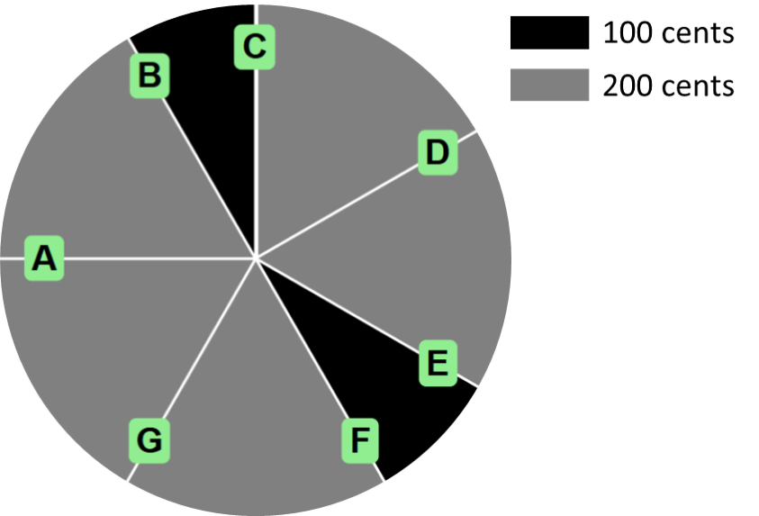
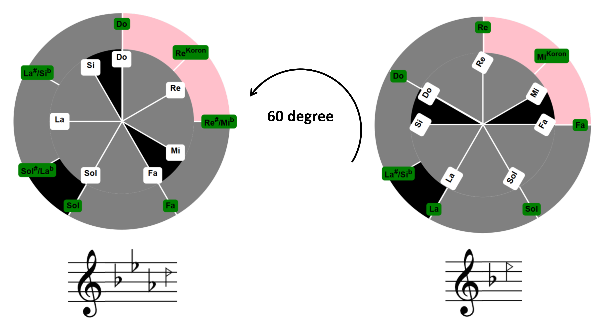

Persian Music Scales App
Explore the beauty of Persian music through interactive tools. This app helps you visualize traditional Persian scales, their microtones, and their connections to Western diatonic scales. Perfect for musicians, students, and anyone curious about Persian music.
How It Works
The app features two interactive circles:
- Diatonic Circle: Represents the Western scale. Rotate it to change the tonic (root note) and observe its relationship with Persian scales. 
- Persian Scales Circle: Aligns dynamically with the Diatonic Circle to show the tonal (root) note and intervals of Persian scales.

Finding the Tonal Note
The tonal note of the Persian scale is always aligned with the 12 o’clock position on the Persian Scales Circle. To identify the tonal note:
- Look at the note at the top of the Persian Scales Circle (12 o’clock).
- This note represents the root (tonal) note of the current Persian scale.
- Adjust the Diatonic Circle to explore transpositions, and the Persian scale’s tonal note updates accordingly.
Example
If the Persian scale’s root is "Do" at the 12 o’clock position, rotating the Diatonic Circle by 60° shifts the root note to "Re." This updates the key signature and dynamically adjusts the Persian scale’s intervals for transposition.
Read More
We invite you to explore the full article for more details:
اپلیکیشن گامهای موسیقی ایرانی
زیبایی موسیقی ایرانی را از طریق ابزارهای تعاملی کشف کنید. این اپلیکیشن به شما کمک میکند گامهای سنتی ایرانی، فواصل ریزپردهای و ارتباط آنها با گامهای دیاتونیک غربی را مشاهده کنید. مناسب برای نوازندگان، دانشجویان و علاقهمندان به موسیقی ایرانی.
نحوه کار
این اپلیکیشن شامل دو دایره تعاملی است:
- دایره دیاتونیک: نمایانگر گام غربی است. با چرخاندن آن میتوانید نت پایه (نت اصلی) را تغییر داده و ارتباط آن را با گامهای ایرانی مشاهده کنید.
- دایره گامهای ایرانی: به صورت پویا با دایره دیاتونیک هماهنگ شده و نت اصلی و فواصل گامهای ایرانی را نمایش میدهد.
یافتن نت اصلی
نت اصلی گام ایرانی همیشه در موقعیت ساعت ۱۲ روی دایره گامهای ایرانی قرار دارد. برای یافتن نت اصلی:
- به نتی که در بالای دایره گامهای ایرانی (موقعیت ساعت ۱۲) قرار دارد نگاه کنید.
- این نت نشاندهنده نت پایه (اصلی) گام ایرانی فعلی است.
- دایره دیاتونیک را برای بررسی جابجاییها بچرخانید؛ نت اصلی گام ایرانی به طور پویا بهروزرسانی میشود.
مثال
اگر نت پایه گام ایرانی "دو" در موقعیت ساعت ۱۲ باشد، با چرخاندن دایره دیاتونیک به اندازه ۶۰ درجه، نت پایه به "رِ" تغییر میکند. این تغییر سرکلید گام را بهروزرسانی کرده و فواصل گام ایرانی را به طور پویا تنظیم میکند.
بیشتر بخوانید
من شما را دعوت میکنم تا برای جزئیات کامل به مقاله کامل نگاهی بیندازید: